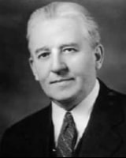
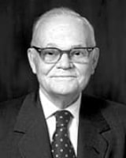

November 30
Believing Christ: A Practical Approach to the Atonement
Stephen E. Robinson May 1990
Read


December 7
Eternal Life- to Know Our Heavenly Father and His Son, Jesus Christ
Elder Robert D. Hales October 2014
Read
December 10
The Only True God and Jesus Christ Whom He Hath Sent
Elder Jeffrey R. Holland October 2007
Read


December 22
The Peace and Joy of Knowing the Savior Lives
President Russell M. Nelson December 2002
Read